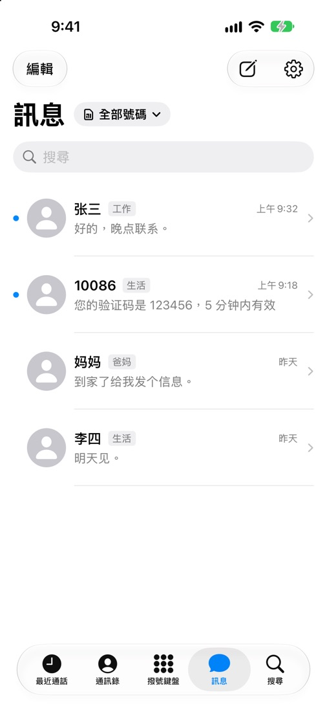
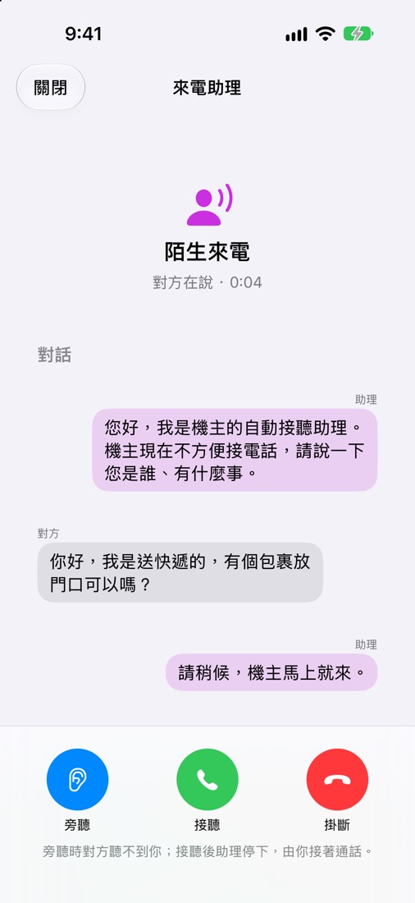
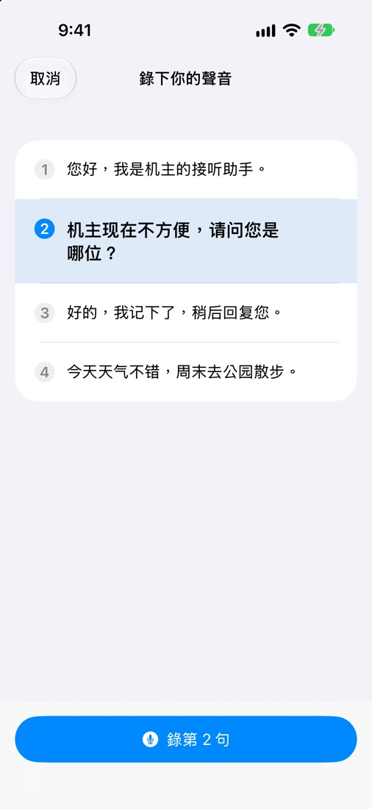
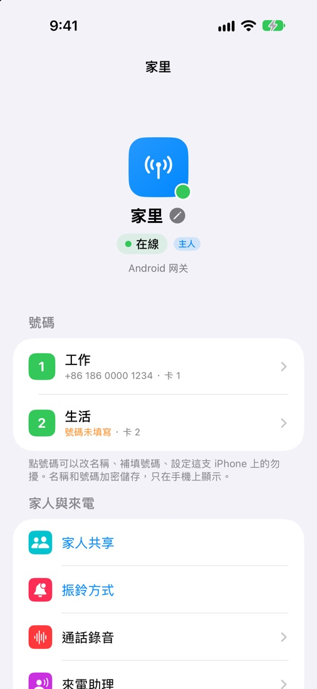

電話
來電時 iPhone 照常響鈴，鎖定畫面也能接；接完記在系統的「最近通話」裡，點一下就能回撥，用的還是原來那個號碼。
- 每通電話都標著是哪個號碼：工作、生活、爸媽家，一眼分清。
- 通話中能看到這通電話走的是直連還是中繼、延遲多少。
- 撥號鍵盤、按鍵音、靜音、擴音、藍牙耳機都和平常一樣。
- 陌生號碼顯示所在地，在手機本機查詢，不上傳。
訊息
簡訊介面接近系統內建的「訊息」。幾個號碼的簡訊可以放在一起看，也可以只看一個號碼。
- 驗證碼自動辨識，一鍵複製。
- 按日期載入閘道手機上以前的簡訊。
- 閘道暫時離線時，先存成草稿，可以選上線後自動送出。
- 簡訊在閘道上加密，到了你的 iPhone 才解開。

來電助理
不認識的號碼，先讓助理接。它用你自己的聲音說開場白，對方說的話即時變成文字出現在你的 iPhone 上。
- 你可以旁聽，點一句預設回覆，或隨時接過來自己說。
- 照著念四句話，閘道就能用你的聲音說話。
- 可以按號碼開關，也可以先響一會兒沒人接再代接。
- 聲音合成和轉寫都在家裡的閘道手機上完成，不經過任何伺服器。


閘道和家人
家裡的閘道在不在線、每張卡叫什麼、誰能接哪個號碼，都在一頁裡。
- 替每張卡取名字；名字和號碼加密，只在手機上顯示。
- 用連結或 QR Code 邀請家人，每個號碼分別給接聽、撥出、看簡訊、傳簡訊的權限。
- 響鈴方式：一起響、主人先響，或指定某人先響。
- 通話錄音、來電助理、自建中繼，都在這裡設定。

還有這些
為「人在外面、卡在家裡」這件事多想了幾步。
出門前檢查
出門前看一眼：閘道、SIM 卡、網路、直連條件、中繼、電量是否都正常。
離線提醒
閘道離線超過一分鐘會通知你，恢復時再說一聲。
主畫面小工具
閘道狀態、號碼卡片、最近通話、常用聯絡人、出門前檢查、來電助理。
換手機不怕
新手機由舊手機核准接手；手機遺失，用復原碼或加密備份找回。
怎麼開始
- 在家裡那支插著 SIM 卡的 Android 手機上裝好閘道。
- 拿到 TestFlight 邀請後，在 iPhone 上安裝 SimNest。
- 打開 SimNest，掃閘道螢幕上的 QR Code。這支 iPhone 就是主人。
iPhone App 目前只對受邀的測試者開放，開放申請時會在這裡說明。需要 iOS 17 或更新的系統。